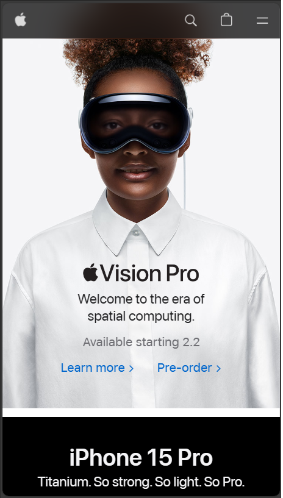

Visual Hierarchy
Apple
Apple Computers

The principle of visual hierarchy is applied when the user must be guided throughout
its interaction with the page. This guidance is achieved through color and contrast,
scale, and grouping.
In the above image, the visual hierarchy could be appreciated in the grouping inside
the product's image. Firstly, the visual element grabs the user's focus. Following,
text elements with different sizes and colors, guides the user's attention to the purchasing link.
White Spacing
Microsoft
Microsoft
White Spacing is a visual hierarchy principle of designing. The importance of this principle arises in
letting the elements breathe, or in other words, adding negative(white) space between elements. This
concept is vastly applied in a minimalistic design with limited elements. This principle is built upon
white spacing elements.
In the above image, this principle is observed in how the product image is separated from its title and
description. Also, the link[button] presents a coherent spacing but is still grouped to the product,
making the active spacing between the product's button graphical element and carrousel control icons.
PARC System
NYSE - New York Stock Exchange
NYSE
PARC is the acronym for the four basic principles of design. Consisting in being consistent throughout
a design, it defines that a graphical element must present: contrast to grab user attention. Consistency
in the repetition of graphical elements, while keeping track of maintaining a good alignment between elements,
and finally, setting a cohesive proximity between correlated elements, and distancing other no of the same group items.
In the above example, these design principles are noticed in the coherent spacing between the elements that compose the
card. A small amount of contrast visually contains correlated elements. The principle of alignment could also be observed
at the beginning of the next card at the bottom of the image.